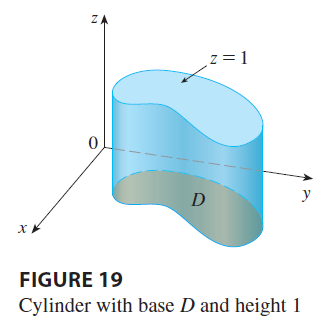

If we integrate the constant function \(f(x, y) = 1\) over a region \(D\), we get the area of \(D\): \[ \iint_D 1 dA = A(D) \tag{10} \]

Figure 19 illustrates why Equation 10 is true: A solid cylinder whose base is \(D\) and whose height is 1 has volume \(A(D) \cdot 1 = A(D)\), but we know that we can also write its volume as \(\iint_D 1 dA\).